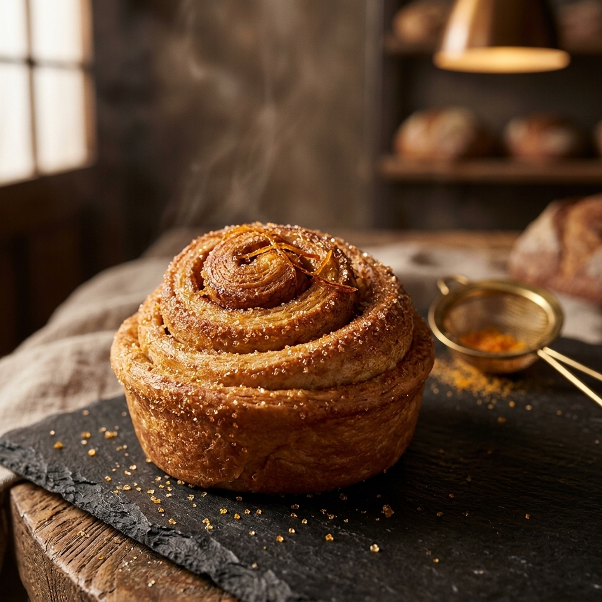

Sourdough Breads
Naturally leavened and patiently fermented for a crackling crust and deep flavor.
Explore Bakes
Your Neighborhood Bakehouse
Slow-fermented loaves, butter-rich pastries, and cakes for the moments worth gathering around.
The Good Stuff
A small daily menu, made with care and the best ingredients we can find.
Naturally leavened and patiently fermented for a crackling crust and deep flavor.
Explore BakesHand-laminated each morning with cultured butter and seasonal fillings.
Explore BakesThoughtful celebration cakes designed around your gathering and your people.
Explore Bakes
The House Favorite
Flour, water, sea salt, and time. Our country loaf rests for 36 hours before meeting the oven, developing its tangy crumb and burnished crust.
Save It For Later
Tap the star on anything that catches your eye. Your favorites will be waiting when you return.

Artisan Breads
$9

Artisan Breads
$10

Pastries & Viennoiserie
$5

Pastries & Viennoiserie
$6
From Our Kitchen
Hear our head baker share why slow bread, local ingredients, and a familiar counter matter to us.
Here at North Star Bakery, every loaf starts before sunrise. We use simple ingredients, local grains, and time because good bread can’t be rushed. Stop by and taste the difference, or place a pre-order and we’ll have something fresh waiting for you.